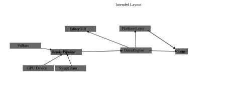

- Generated by
 1.16.1
1.16.1
|
OstenEngine
|
Is a work in progress game "engine" made in C++ and Vulkan, tried to use minimal dependencies for this project while still keeping the development within a resonable time.
To build this project you need to be able to run the vkcube command, info on that can be found at https://vulkan.lunarg.com/

Instance is relatively simple since all it does is pass some info into vulkan on what version and optional info like name and version of the application. It also makes sure that we enable validation layers for easier debugging.
This is the container for basically anything render related it sets up most other things of the listed one level deeper in the hierarchy, it also manages the actual render-pass.
The device is the representation of the gpu and therefore is used for gpu communication and checking gpu support
The swap-chain is the thing that actually presents the images to the screen